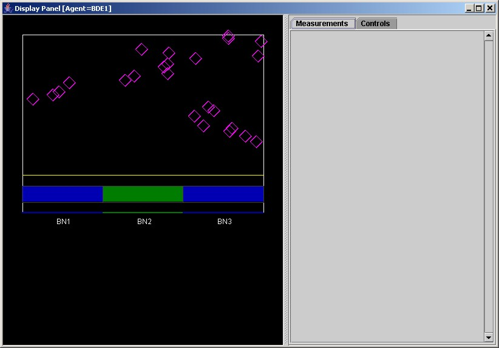
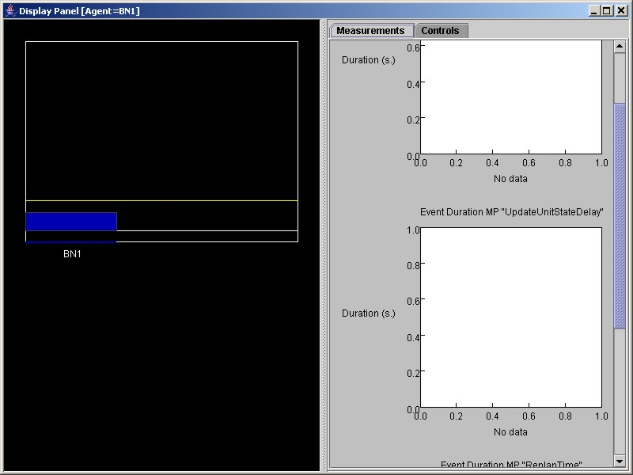

COUGAAR_INSTALL_PATH
environment is <CIP>.<CPE>
directory. Either unzip the provided ZIP file or checkout the CPE
module from CVS.cpe.jar file from <CPE>\classes
into the <CIP>\lib directory.jgl3.1.0.jar, jfreechart-0.9.18,
and jcommon-0.9.3 from <CPE>\lib to the
<CIP>\sys directory.<CIP>\bin.
It is preferable that the "-server" flag be set on the
Java VM's command line arguments. Add this to the
setarguments.bat file in <CIP>\bin so that the
HotSpot Server VM will be used. Also, increase the maximum heap size by
adding the -mx768m parameter to the MYMEMORY environment
variable.setarguments.bat
set
MYPROPERTIES=-server
-Xbootclasspath/p:"%COUGAAR_INSTALL_PATH%\lib\javaiopatch.jar" |
alpreg.ini
file has the correct name server, i.e. address=<ipaddress or
host name>. This must be done for each installation of
Cougaar. The alpreg.ini file is found in <CIP>\configs\common.build.xml ) is provided in the <CPE>
directory. The default target "jar" builds the jar file, while the
"copy" target builds the jar file and copies it into <CIP>/lib
directory. For example, invoke "ant jar" from the <CPE>
directory in order to build the JAR file.<CPE>\bin directory contains the runtest.bat
file which launches a test program for the manuever planning and supply
planning logic. It does not execute a distributed Cougaar
society; rather it exercise the various planners and visualization
display engines. It also serves as a testbed for obtaining
scoring and performance curves for planning and execution.<CPE>\test\newconfigs directory. | Plugin Name |
Description |
org.cougaar.cpe.agents.plugin.UnitAgentPlugin |
Implements CPY agent
functionality. Used in CPY1.ini, etc. |
org.cougaar.cpe.agents.plugin.C2AgentPlugin |
Implements BN agent
functionality. Used in BN1.ini, BN2.ini, BN3.ini |
org.cougaar.cpe.agents.plugin.BDEAgentPlugin |
Implements BDE agent
functionality. |
org.cougaar.cpe.ui.AgentDisplayPlugin |
Displays agent state.
Optional. May be attached to any BDE, CPY, or BDE agent |
org.cougaar.cpe.simulator.plugin.CPESimulator |
Runs the WorldState agent.
It also creates a user interface for starting and configurating the
simulation. |
| File |
Description |
| NodeWorld.ini | Contains the WorldState agent. |
| NodeBDE.ini |
Contains both BDE and Supply1 agent. |
| NodeBN1.ini |
Contains the BN1 agent |
| NodeBN2.ini |
Contains the BN2 agent |
| NodeBN3.ini |
Contains the BN3 agent |
| NodeCPY19.ini |
Contains all CPY units.
These may be split up as needed across multiple nodes. |
<WorldStateConfig> |
WorldStateConfig.xml
<CPConfig> |
CPYAgentConfig.xml <CPConfig> |
BNAgentConfig.xmlcd <CPE>\test\newconfigs
Node NodeWorld.ini
2004-06-02 20:43:40,908 SHOUT [CPESimulatorPlugin] - WorldState
agent found new relay from BN1 agent
2004-06-02 20:43:40,478 SHOUT [CPESimulatorPlugin] - WorldState agent
found new relay from BDE1 agent.
...
|
 |
|  |
<CPE>\configs directory.techspec.dtd file contains the document type
definition for TechSpec documents.cpespecs.xml file contains the TechSpecs specific to
the CPE society and configuration.